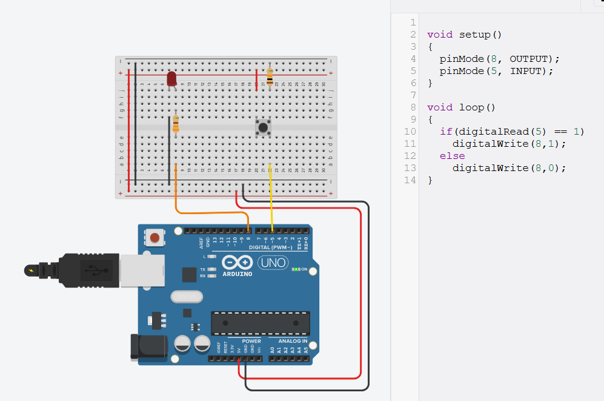
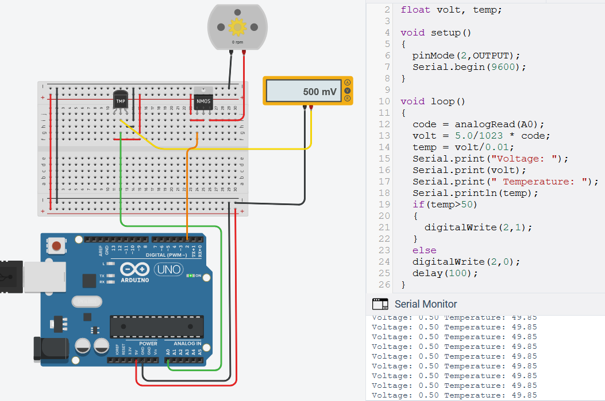
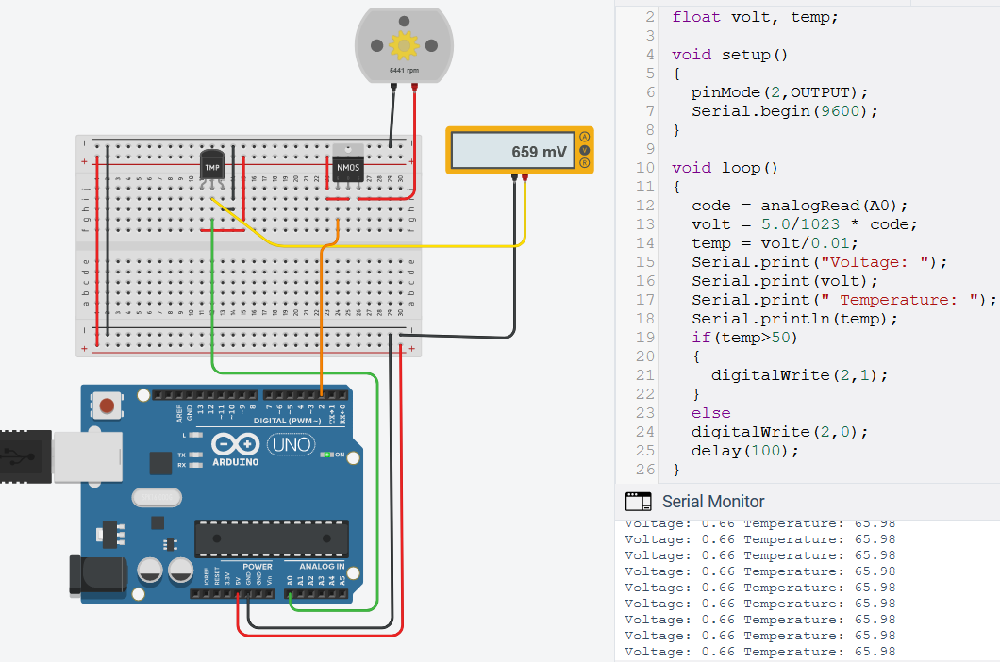
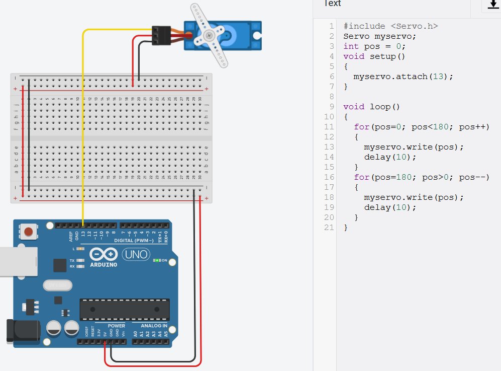
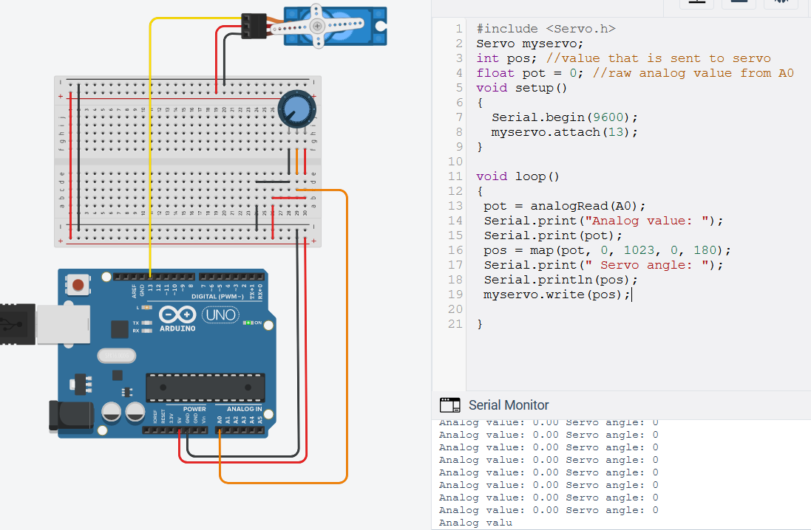
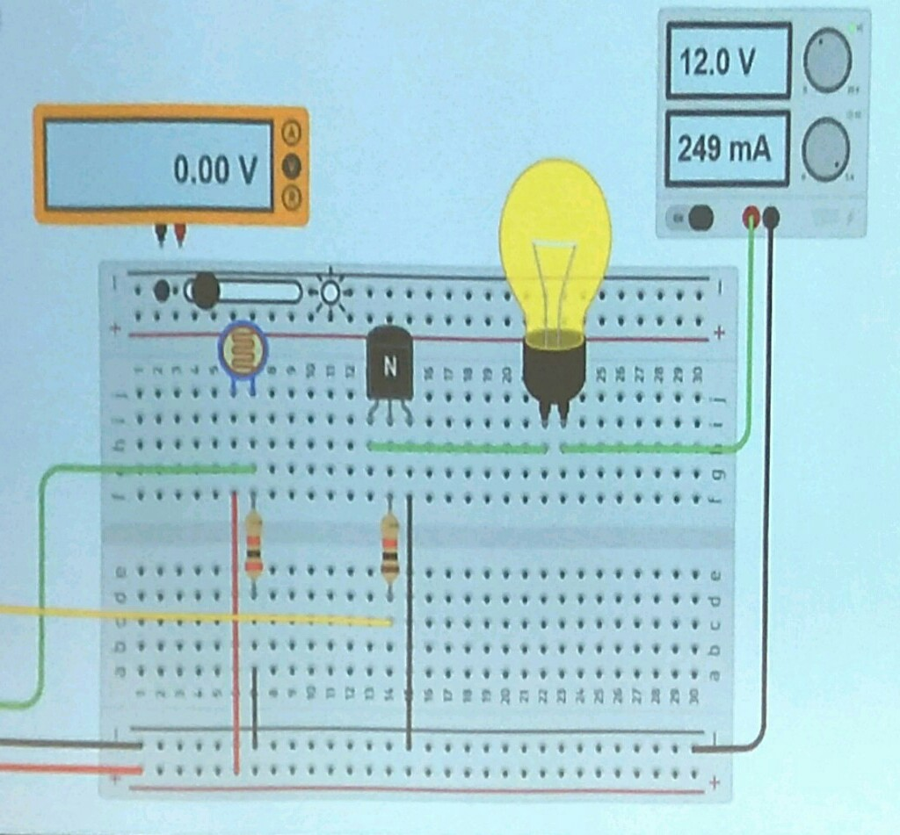

Autodesk TinkerCAD
In order to simulate an arduino (UNO), we will be using tinkercad to make sure that our code works. This allows us to work on the project prototype without having the arduino with us, making it much more convinient and efficient.
This circuit reads the state of digital input pin 5, and turns on the LED connected to digital output pin 8 when pin 5 becomes high (pull down resistor). 
This circuit makes use of a temperature sensor IC in order to detect an overheating condition and turn on a cooling fan.
Since arduino IO pins cannot provide the high current required to run motors, a MOSFET transistor is used to switch the motor, in a similar fashion to a relay.
By using solid state switches instead of electromechanical switches, we can eliminate mechanical complexity (reliability issues) and noise(caused by relay contacts).
As such, it can be used for all sorts of power electronics where cooling is critical.
 
This circuit sweeps an analog servo back and forth through its mechanical range, making use of the servo.h library and 2 for loops.


While this circuit rotates the servo according to the position of the potentiometer, which acts as a variable voltage divider that connnects to A0


I have also made the arduino display the value that is written to the
This is one of the circuits the teacher demonstrated during class, it turns on the bulb when the analog value read from the input pin is smaller than a set value, using a transistor as a switching device.
